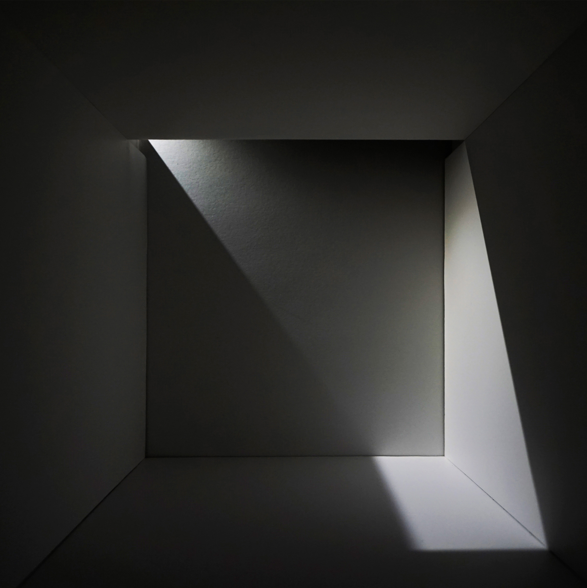
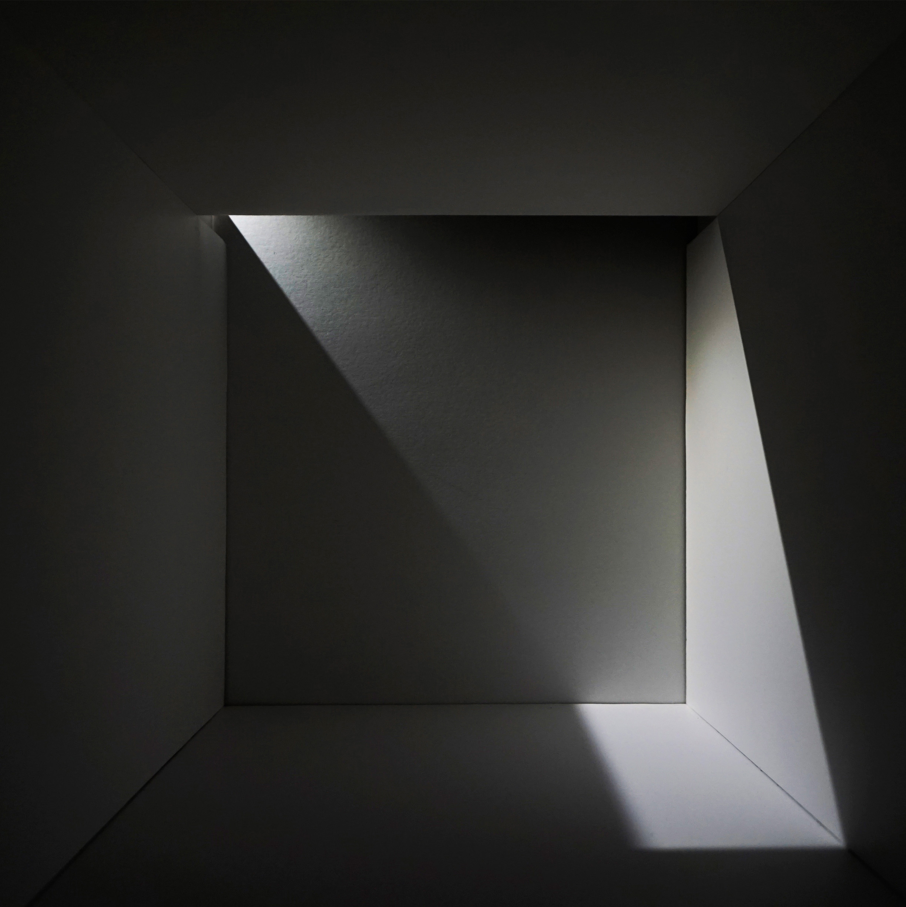
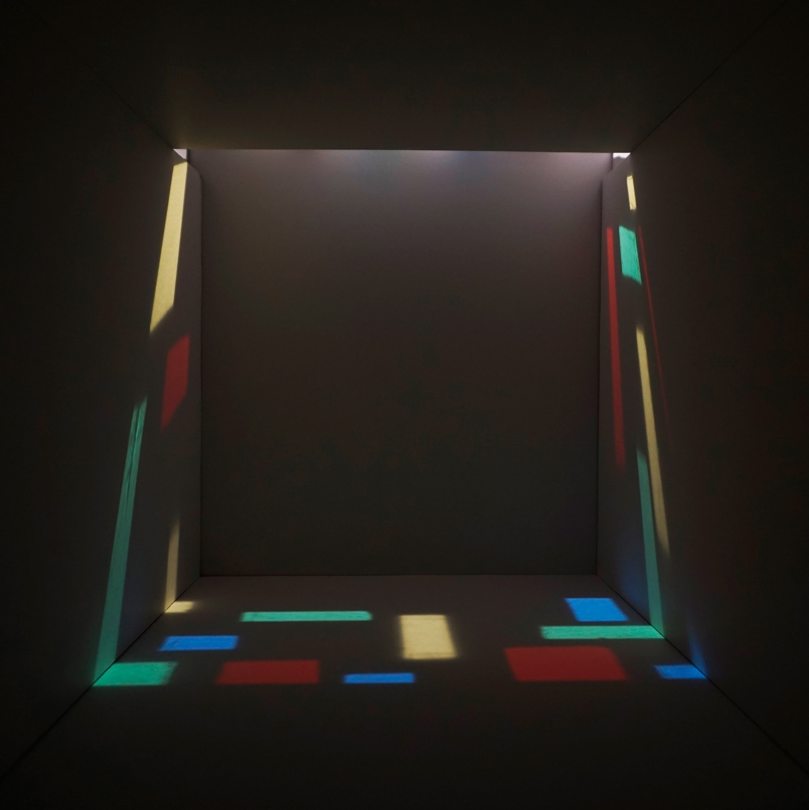

Light Room
2019
One of the most important aspects of good architecture is light and how it penetrates interior spaces. In this series of studies, I built a model of an interior space to examine light and how it enters the enclosed space. A series of photographs were taken to document the quality and feel of the light within the interior.
Monochrome
 

Color
For Light Room: Color, I was inspired by Le Corbusier’s Chapel at Ronchamp and wanted to create colored filters to create a unique aesthetic for the interior space.

Curve
For Light Room: Curve, I wanted to change the interior space to create a different kind of image for my documentation of light. With the curved line and the colored light filters, I was able to create a new type of aesthetic.